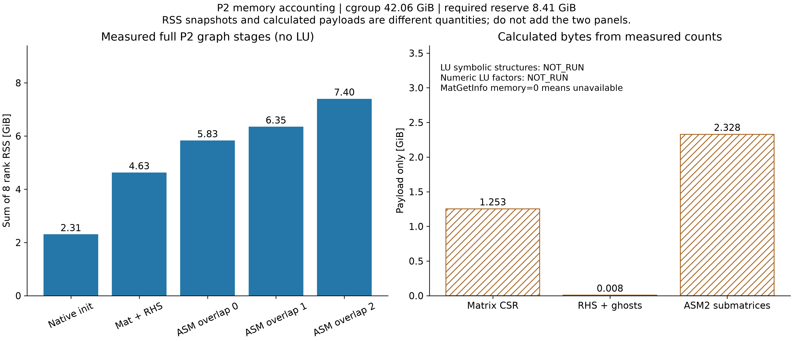
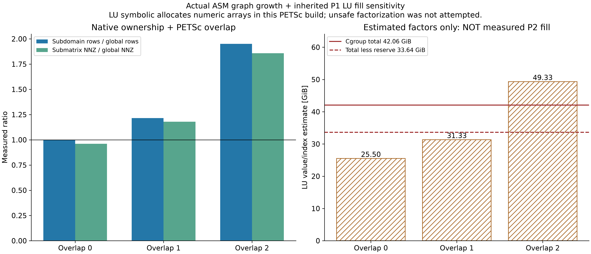
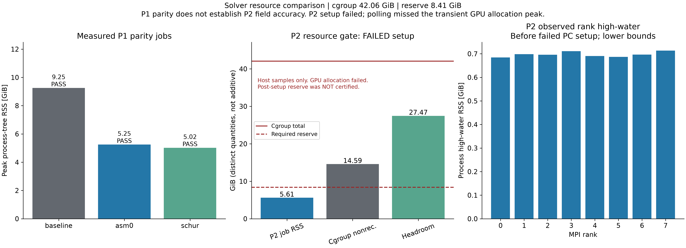

P2/P1 线性代数与资源审计
中文主报告 · 机器判定 · 图表原始数据
蓝/绿实色表示测量；斜线表示由计数计算或继承填充率估计。未运行的阶段明确标为 NOT_RUN。内存变小不等于流场精度提高。

图1：完整曲面 P2 原生图结构的实测 RSS 与理论有效载荷，两个面板不能相加。
图2：实测 ASM 行/结构项重复与原 P1 LU 填充率敏感性。未进行不安全的 LU symbolic/numeric 分配。
图3：P1 回归与 P2 单系统资源门；不代表实际 P2 稳态流场认证。